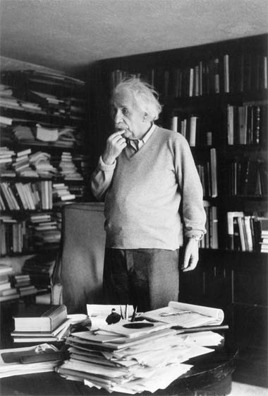

Albert Einstein

Albert Einstein sentado em seu escritório na Universidade de Berlim.
Albert Einstein, conhecido como "o pai da teoria da relatividade", foi um físico teórico alemão que desenvolveu a teoria da relatividade geral, um dos dois pilares da física moderna (ao lado da mecânica quântica). Sua fórmula E = mc², que descreve a equivalência entre massa e energia, é uma das equações mais famosas do mundo.
Anos Importantes na Vida de Einstein
- 1905 - Publicou quatro artigos revolucionários na física teórica
- 1915 - Apresentou a teoria da relatividade geral
- 1921 - Recebeu o Prêmio Nobel de Física
- 1933 - Emigrou para os Estados Unidos
- 1955 - Morreu em Princeton, New Jersey